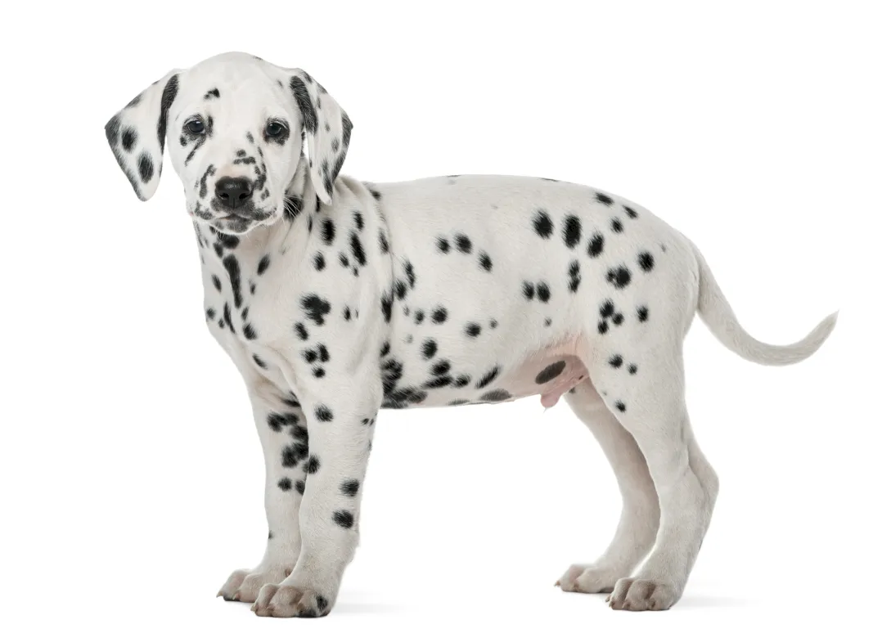

Super Mario es una serie de videojuegos de gran popularidad creada por Nintendo. El juego se centra en las aventuras de Mario en el ficticio Reino de los Hongos y en todos sus distintos escenarios. El tipo de letra del logo de Super Mario es muy similar a una fuente llamada Chlorinap, isponible en mayúsculas (contorno), números y la mayoría de los signos de puntuación.>
